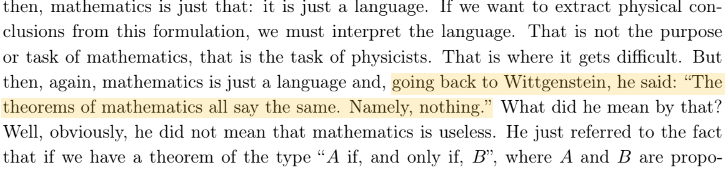

Thoughtless Physics
Home
About
Learning
Contact

Mathematics is (almost) useless
Physics is fun! I promise.
Here are some notes:
Notes on BKT Phase Transition
Unfinished notes on General Relavity
Spin, belts and the Hopf Fibration
and presentations I did back in the days:
Differential Geometry (presentation for the Dead Physicists Society back in 2018)
All kinds of connectivity (Portuguese)
Semiclassical limits of quantum mechanics via Wigner's measure (SIICUSP 28)